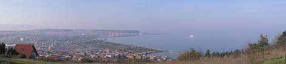

Samsun merkezine sadece 5 kilometre uzaklıktaki Atakum ilçesi, İlkadım ve Canik ile birlikte şehrin üç merkez ilçesinden biri ve en popüler turistik noktaları arasında. Orta Karadeniz ve Doğu Karadeniz'in en uzun sahiline sahip olmasıyla ünlü Atakum; ince kumlu güzel sahili, tertemiz denizi ve denizin içine kadar uzanan ahşap yürüyüş yoluyla hem tüm gün Karadeniz’in serin sularının tadını çıkarmak hem de akşam yürüyüşlerine çıkmak için ideal bir yer. Atakum sahilinin çevresinde alışveriş merkezleri, kafeler, oteller, restoranlar ve eğlence merkezleri sıralanıyor. Samsun'da ilk uğramanız gereken yerlerden biri olan Atakum sahili, geceler aydınlatıldığı zaman da muhteşem manzaralar sunuyor. Atakum akşam yürüyüşlerinden sonra sahil restoranlarında çarpıcı gün batımı manzaraları eşliğinde taze deniz ürünleri ve Karadeniz mutfağından lezzetler tatmayı da unutmayın.
Samsun’un üç merkez ilçesinden ve en kalabalık noktalarından biri olan İlkadım ilçesi; 7,5 kilometre uzunluğundaki sahili, her zaman hareketli limanı, alışveriş merkezleri, kaliteli otelleri, restoran ve kafeleri ile şehrin başka bir popüler gezi noktası. Çocuklu aileler için keyifli bir gezi sunan Samsun Hayvanat Bahçesi, Mert Plajı ve Su Parkı, Samsun’un en sevilen eğlence merkezlerinden biri olan Akyol Lunapark, hem Karadeniz'i hem de şehri kuş bakışı izleyebileceğiniz Samsun Teleferik, Atatürk Parkı, Gazi Müzesi, Samsun Büyük Camii, İtalyan Katolik Kilisesi ve İsa Baba Camii gibi pek çok turistik noktası bulunan İlkadım, büyük alışveriş ve iş merkezleriyle de Samsun gezilerine başlamak için güzel yerlerden biri.